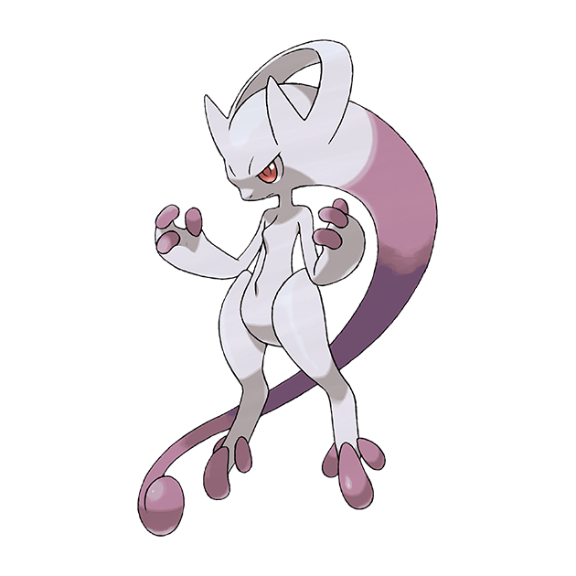
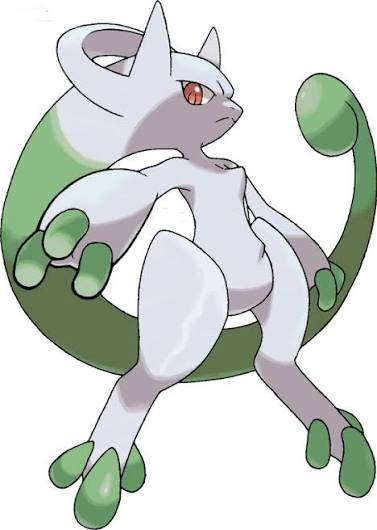

Mega Mewtwo Y – Raid Boss Breakdown
Mega Mewtwo Y is one of the most powerful Psychic-type raid bosses in Pokémon GO. It is designed as a pure damage-focused “glass cannon,” meaning it hits extremely hard but doesn’t rely on bulk to stay in battle.
This makes the raid more about speed and counter quality rather than endurance.
Overview of Mega Mewtwo Y
- Type: Pure Psychic
- Battle style: Extremely high Attack, low durability
- Raid role: High DPS Mega + Psychic team damage booster
Why Mega Mewtwo Y stands out
What makes Mega Mewtwo Y so dangerous is not just its stats, but how quickly it can end fights when used correctly.
It sits at the very top of the damage charts, often outperforming most Legendary Pokémon in raw DPS output.
In raids, it also plays an important support role by boosting all Psychic-type attackers in your team, making coordinated groups significantly stronger.
Raid difficulty
This is not a beginner-friendly Mega raid. Mega Mewtwo Y can pressure teams heavily if counters are not optimized.
Raid Difficulty: EXTREME (Tier 5+ Mega Raid Boss)
| Factor | What it means in battle | ||
|---|---|---|---|
| Very high Attack | Can quickly knock out weak counters | ||
| Coverage moves | Forces players to use proper resistances | ||
| Time pressure | Requires strong DPS to finish in time | ||
| Glass cannon design | High damage output but punishes mistakes |
| Group Size | Realistic Difficulty | ||
|---|---|---|---|
| Solo | Not possible | ||
| Duo | Very difficult (requires optimized teams) | ||
| Trio | Challenging but achievable | ||
| 4–5 players | Comfortable clear with good counters | ||
| 6+ players | Easy and fast clear |
| Move | Type | Battle feel | Notes |
|---|---|---|---|
| Psycho Cut | Psychic | Very fast energy gain | Enables frequent charged moves |
| Confusion | Psychic | Slow but heavy damage | Hits harder per turn |
In raids: Psycho Cut is more common for pressure, while Confusion is more punishing if you get stuck under it.
Charged Moves (Main danger source)
This is where Mega Mewtwo Y becomes really threatening. Its charged moves decide how difficult the raid feels.
| Move | Type | Battle impact | Notes |
|---|---|---|---|
| Psystrike | Psychic | Extreme damage pressure | Signature move, top-tier DPS |
| Shadow Ball | Ghost | High burst damage | Great coverage option |
| Focus Blast | Fighting | Can delete Dark-types | Very risky if not dodged |
| Ice Beam | Ice | Coverage damage | Targets Dragons/Flyers |
| Thunderbolt | Electric | Situational pressure | Less common threat |
| Flamethrower | Fire | Coverage option | Balanced but annoying |
Most important to watch: Psystrike and Focus Blast usually decide whether your team survives comfortably or gets forced into early relobbies.
Elite Moves (Legacy power)
Some of Mega Mewtwo Y’s strongest options come from legacy moves that aren’t always available.
| Move | Type | Why it matters |
|---|---|---|
| Psystrike | Psychic | Best Psychic DPS move in the game |
| Shadow Ball | Ghost | Strong coverage against Psychic counters |
How the raid boss actually feels
When you fight Mega Mewtwo Y, it doesn’t feel like a slow raid boss — it feels fast and aggressive.
- Fast moves constantly build pressure
- Charged moves come quickly and hit hard
- Wrong counters get punished immediately
What makes it dangerous:
- Psystrike gives constant DPS pressure
- Focus Blast can punish Dark-heavy teams
- Shadow Ball removes Psychic/Ghost counters quickly
Simple survival logic
If you’re preparing for this raid, the safest approach is understanding move threats instead of memorizing everything:
- If you see Psystrike → be ready for consistent heavy damage
- If you see Focus Blast → don’t rely only on Dark-types
- If you see Shadow Ball → avoid stacking Psychic/Ghost too heavily
Most reliable counter types:
- Dark-types (careful of Focus Blast)
- Ghost-types (careful of Shadow Ball)
Quick summary
| Category | Best answer |
|---|---|
| Fast Move pressure | Psycho Cut |
| Main raid threat | Psystrike |
| Biggest danger combo | Psystrike + Focus Blast |
| Safe general counters | Dark / Ghost (balanced team) |
Mega Mewtwo Y Role
Mega Mewtwo Y is built as a pure offensive powerhouse. It doesn’t just deal damage — it defines how fast Psychic-type raids can be cleared when used correctly.
In most situations, its value comes from two things: extremely high damage output and its Mega boost to Psychic-type allies.
In PvE (Raids)
This is where Mega Mewtwo Y shines the most. It functions as both a top-tier attacker and a damage amplifier for the entire team.
- One of the highest Psychic-type DPS options available
- Excels against Fighting and Poison raid bosses
- Improves overall raid speed by boosting Psychic attackers
Where it performs best:
- Fighting-type bosses like Machamp
- Poison-type raids like Nihilego
- Neutral targets where raw DPS matters more than typing
The main limitation is survivability — it deals damage extremely well but cannot take hits for long if misplayed.
In Gyms
In gym battles, Mega Mewtwo Y behaves like a fast cleaner rather than a defensive option.
It can quickly remove common defenders, especially Fighting and Poison types, but it is not designed to hold gyms at all.
- Very fast gym clearing speed
- Strong offensive pressure
- Low staying power on defense
In PvP (GO Battle League)
In PvP, Mega Mewtwo Y is more of a high-risk, high-reward pick. If it gets momentum, it can overwhelm opponents quickly, but it struggles when pressured.
What it does well:
- Forces shield usage with strong Psychic pressure
- Wins quickly if shields are already gone
- Threatens Fighting and Poison cores like Lucario and Machamp
Where it struggles:
- Dark-type Pokémon like Tyranitar and Yveltal
- Fast pressure Ghost attackers
- Anything that can outpace its fragility
Special Cups & Limited Formats
In restricted formats, Mega Mewtwo Y can either feel completely broken or heavily countered depending on the meta.
- In Psychic-heavy metas → extremely dominant
- Against Dark/Ghost-heavy teams → struggles significantly
- In limited cups with weak counters → often overpowered
In formats like Psychic Cup, it often becomes a central threat if allowed.
Raid Support Value
Beyond raw damage, its Mega role is extremely valuable for team synergy.
- Boosts Psychic-type damage for all raid allies
- Improves overall raid efficiency even when switched out
- Helps coordinated teams clear raids faster
Final Summary
| Mode | Performance | |
|---|---|---|
| Raids (PvE) | Top-tier Psychic Mega attacker + team booster | |
| Gyms | Fast attacker, poor defender | |
| PvP | High burst, low consistency | |
| Special Cups | Meta-defining or heavily countered depending on rules |
| Level | Realistic Outcome | |
|---|---|---|
| Solo | Not practical under normal conditions | |
| Duo | Possible with optimized coordination | |
| Trio | Most balanced and reliable setup | |
| Beginner | Depends heavily on group size | |
| Intermediate | Consistent clears with decent teams | |
| Advanced | Fast and efficient clears | |
| Expert | Speed-focused optimized raids |
| Pokemon | Type | Why it’s good |
|---|---|---|
| Mega Gengar | Ghost/Poison | One of the highest Ghost DPS options in the game |
| Mega Tyranitar | Dark/Rock | Strong Dark damage with good bulk |
| Mega Rayquaza | Dragon/Flying | Insane raw damage output even without super-effectiveness |
| Shadow Mewtwo | Psychic/Ghost | Extremely high DPS glass cannon |
| Shadow Hydreigon | Dark/Dragon | Reliable and consistent Dark-type damage |
These Pokémon stand out because they either hit super effectively with Ghost or Dark moves, or simply deal such high damage that they stay relevant regardless of matchup.
Strong Counters
If you don’t have top-tier Mega or Shadow Pokémon, these options still perform very well.
| Pokemon | Type | Role |
|---|---|---|
| Darkrai | Dark | High damage and easy to use in raids |
| Chandelure | Ghost/Fire | Strong Ghost attacker with solid DPS |
| Giratina (Origin) | Ghost/Dragon | Very reliable with good survivability |
| Weavile | Dark/Ice | Fast attacker but quite fragile |
| Hydreigon | Dark/Dragon | Balanced Dark-type attacker |
These Pokémon are easier to build and still get the job done comfortably in most raid groups.
Budget Options
These are useful if you’re missing high-end counters.
| Pokemon | Type | Notes |
|---|---|---|
| Gengar | Ghost/Poison | Very high damage but extremely fragile |
| Tyranitar | Rock/Dark | Good balance of bulk and damage |
| Banette | Ghost | Glass cannon Ghost attacker |
| Honchkrow | Dark/Flying | Fast but low survivability |
| Absol | Dark | Easy to obtain but fragile |
These options are mainly for filling gaps in your team when stronger counters aren’t available.
Type Strategy
Understanding typings is more important than memorizing individual Pokémon.
Ghost-type attackers
- Deal super-effective damage to Psychic types
- Benefit heavily from Mega Gengar boosts
- Best when used in coordinated raid groups
Dark-type attackers
- Safer option with fewer weaknesses
- Consistent performance across all raid conditions
- Easier to use for most players
Bug-type attackers
- Generally weaker compared to Ghost and Dark
- Limited strong options available
- Not recommended unless necessary
Quick Raid Tips
- Start with your Mega Pokémon to boost team damage
- Build your team around Shadow and Dark attackers
- Avoid Fighting-type Pokémon completely
- Rejoin quickly instead of over-dodging
Tier Overview
| Tier | Best Pokémon |
|---|---|
| S+ | Mega Gengar, Mega Tyranitar, Shadow Mewtwo |
| S | Darkrai, Chandelure, Giratina-O |
| A | Hydreigon, Weavile, Tyranitar |
| B | Gengar, Banette, Honchkrow |
| C | Bug-types (Scizor, Pinsir) |
Shiny Mega Mewtwo Y
How Shiny Mewtwo Looks
Shiny Mewtwo is one of the most noticeable shiny transformations in Pokémon GO. The usual deep purple tones shift into a greenish-turquoise shade, giving it a very different vibe compared to its normal form.
Normal Mewtwo looks more classic and psychic-focused, with its purple tail and glowing eyes, while the shiny version completely changes the mood of the design.
- Normal form: pale gray body with purple accents
- Shiny form: greenish-turquoise body with softer tones
- Eyes and aura feel slightly brighter and more intense
Mega Mewtwo Y – Shiny Difference
When Mewtwo Mega Evolves into its Y form, the shiny variation becomes even more unique.
Normal Mega Mewtwo Y has a strong purple psychic aura and a sharp, sleek design. The shiny version softens those tones and gives it a more mystical, almost alien-like appearance.
- Shiny Mega Mewtwo Y leans into a green + purple mix
- Aura becomes softer and less aggressive visually
- The overall design feels more “cosmic psychic entity” than a battle form
Mega Mewtwo X vs Mega Mewtwo Y (Shiny Comparison)
| Feature | Mega Mewtwo X (Shiny) | Mega Mewtwo Y (Shiny) |
|---|---|---|
| Battle style | Physical fighter | Special psychic attacker |
| Color feel | Green + white + purple mix | Green with softer purple aura |
| Overall vibe | Intimidating and aggressive | Elegant and mystical |
| Body design | Bulkier and more muscular | Light, floating, streamlined |
| Collector appeal | Very high (rare fighter aesthetic) | Very high (cosmic psychic look) |
Shiny Rarity
Shiny Mewtwo remains one of the most desirable raid shinies in the game.
- Shiny odds in raids are usually around 1 in 20
- Mega Evolution does not affect shiny chances
- If it’s shiny in the encounter, it stays shiny after Mega evolving
Which One Looks Better?
Mega Mewtwo X (Shiny) feels more like a powerful battle beast. The green tones make it look more alien and aggressive, which many players like for its intimidating design.
Mega Mewtwo Y (Shiny), on the other hand, looks smoother and more mystical. It gives off a “psychic deity” or cosmic energy vibe, which makes it popular among collectors and aesthetic-focused players.
At the end of the day, it comes down to preference — X feels more raw and physical, while Y feels more elegant and otherworldly.

Mewtwo
Images are used for informational and educational purposes only. All rights belong to their respective owners.
Shiny Mewtwo
Images are used for informational and educational purposes only. All rights belong to their respective owners.

Mega Mewtwo Y
Images are used for informational and educational purposes only. All rights belong to their respective owners.

Shiny Mega Mewtwo Y
Images are used for informational and educational purposes only. All rights belong to their respective owners.
Evolution & Buddy System – Mega Mewtwo Y
Mewtwo doesn’t evolve in the traditional sense. Instead, it uses the Mega Evolution system, which relies on Mega Energy rather than candy-based evolution.
How Mega Evolution Works
To unlock Mega Mewtwo Y, you first need to collect Mega Energy. The main way to do this is by defeating Mega Mewtwo Y in raids.
Once you have enough energy, you can Mega Evolve Mewtwo directly from its profile page.
- Catch or already own Mewtwo
- Earn Mega Energy by completing Mega Mewtwo Y raids
- Use the Mega Evolve button to transform it into Mega Mewtwo Y
Mega Evolution System
| Action | How it works |
|---|---|
| First Mega Evolution | Requires a large amount of Mega Energy |
| Future Mega Evolutions | Cost reduces after the first evolution |
| Reuse system | After cooldown, Mega Evolution becomes free |
Buddy Distance for Mewtwo
Mewtwo is classified as a Legendary Pokémon, which means it follows the longest buddy walking distance in Pokémon GO.
That means you need to walk quite a bit just to earn a single candy.
| Pokémon Category | Distance per Candy |
|---|---|
| Common Pokémon | 1–3 km |
| Rare Pokémon | 5 km |
| Legendary Pokémon (Mewtwo) | 20 km |
| Mythical Pokémon | 20 km |
For Mewtwo specifically, this makes candy farming through walking extremely slow. Most players rely on raids or rare candy instead.
Best Buddy Benefits
Making Mewtwo your Best Buddy gives a small but useful battle advantage.
- Best Buddy boost increases its level by +1 when active
- Slight CP boost while it is set as your buddy
- Useful mainly for PvE raid performance
Buddy Friendship Levels
| Stage | Benefit |
|---|---|
| Good Buddy | Basic interaction bonuses |
| Great Buddy | Helps with catching Pokémon |
| Ultra Buddy | Can bring helpful items |
| Best Buddy | +1 battle level boost |
Why This Matters for Mega Mewtwo Y
The buddy system doesn’t directly help with Mega Evolution, but it still plays a long-term role in powering up Mewtwo.
- Walking for candy is very slow for Legendary Pokémon
- Mega Energy mainly comes from raids, not walking
- Buddy system is useful for gradual progress and CP boosting
Best Mega Counters for Mega Mewtwo Y
Mega Mewtwo Y is a Psychic-type raid boss with extremely high attack, so your best options are Mega Pokémon that boost Ghost, Dark, or Bug-type damage while also dealing strong DPS themselves.
Top Mega Counters
Mega Gengar
- Type: Ghost/Poison
- Role: Highest DPS Mega attacker in the game
Mega Gengar is the most aggressive option you can bring. It melts Psychic bosses thanks to its massive Ghost-type damage and fast energy gain.
- Double super-effective Ghost pressure
- Extremely high attack stat
- Perfect synergy with Shadow Ball builds
Mega Tyranitar
- Type: Rock/Dark
- Role: Tanky Dark-type damage dealer
Mega Tyranitar is a much safer pick if you don’t want something too fragile. It stays on the field longer while still dealing strong Dark-type damage.
- Consistent super-effective Dark damage
- Much bulkier than Ghost Megas
- Great for longer, safer raid runs
Mega Beedrill
- Type: Bug/Poison
- Role: Cheap Mega + team damage booster
Mega Beedrill is more about support than raw power, but it’s easy to Mega evolve and still boosts overall Bug damage in the raid.
- Bug typing hits Psychic super effectively
- Low Mega Energy cost
- Useful early-game Mega option
Mega Absol
- Type: Dark
- Role: High burst Dark attacker
Mega Absol is a glass cannon, but it can hit surprisingly hard if used properly. It also boosts Dark-type damage for the whole team.
- Strong burst damage potential
- Good Dark-type team synergy
- Best used in coordinated raids
Mega Banette
- Type: Ghost
- Role: Ghost damage amplifier
Mega Banette is a great option if your team is focused on Ghost attackers. It helps push overall DPS higher while still contributing decent damage itself.
- Boosts Ghost-type damage team-wide
- Strong matchup vs Psychic bosses
- Works well with Shadow-heavy teams
Mega Tier List vs Mega Mewtwo Y
S+ Tier
- Mega Gengar (best overall damage)
- Mega Tyranitar (best balance of power and survival)
S Tier
- Mega Banette
- Mega Absol
A Tier
- Mega Beedrill
- Mega Houndoom
Best Raid Strategy
The easiest way to handle Mega Mewtwo Y is to combine a strong Mega with Shadow attackers and focus on pure DPS output.
Ghost-focused team
- Mega Gengar + Shadow attackers
- Fastest raid clear speed
Dark-focused team
- Mega Tyranitar + Yveltal + Hydreigon
- More balanced and safer option
Bug-focused team
- Mega Beedrill + Scizor
- Mainly used for team boosts rather than raw damage
Simple Raid Setup
If you want a straightforward winning team setup, this works in most cases:
- Mega Gengar for maximum damage output
- Mega Tyranitar as a safe backup Mega
- Fill remaining slots with Shadow attackers like:
- Shadow Mewtwo
- Shadow Hydreigon
- Shadow Chandelure
- Yveltal
This combination gives you both speed and consistency, making the raid much easier even for mid-level groups.
Candy & Catch Rewards – Mega Mewtwo Y
Farming candy for Mewtwo is a long grind, and most players rely on raids, Pinap Berries, and buddy walking to power it up into Mega Mewtwo Y.
Candy from Catching Mewtwo
When you catch Mewtwo after raids, the amount of candy you get depends on bonuses like berries and event boosts.
| Action | Candy Reward |
|---|---|
| Base catch | 3–6 Mewtwo Candy |
| Transfer | 1 Candy |
| Pinap Berry catch | 6–12 Candy total |
| Silver Pinap Berry | 8–16 Candy + extra item bonus |
Best Berries for Candy Farming
Pinap Berries are the simplest way to increase your candy yield, especially during raid events.
- Pinap Berry doubles candy from a successful catch
- Silver Pinap adds extra candy and bonus rewards
- Best used when you’re confident the catch will succeed
Mega Evolution Candy Bonus
Mega Pokémon don’t increase Mewtwo candy directly, but they do help during Psychic-type events by boosting candy and XL candy for Pokémon of the same type.
- Mega Psychic Pokémon can improve candy gains during events
- XL Candy drop rates also get a small boost
- Effect is more useful for wild spawns than raid bosses
For Mewtwo specifically, the biggest source of candy will still be raids rather than Mega or wild bonuses.
Buddy Candy Farming
Putting Mewtwo as your buddy is a slow but steady way to earn extra candy over time.
| Condition | Candy Rate |
|---|---|
| Normal walking | 20 km per candy |
| Excited Buddy | Effectively reduces distance (~10 km feel) |
XL Candy Farming
XL Candy is required to push Mewtwo to its full potential at level 50. It’s mainly earned through higher-level gameplay activities.
- Raids (main source)
- Walking Mewtwo as buddy
- Transferring extra Mewtwo
- Special in-game events
Why This Matters for Mega Mewtwo Y
To fully power up Mega Mewtwo Y, you need a large amount of candy and XL candy, especially if you’re aiming for PvP or high-level raid performance.
- Regular candy helps with powering up
- XL Candy is required for level 40–50 progression
- Raids remain the fastest and most reliable farming method
Best Candy Farming Approach
If you want to build Mewtwo efficiently, focus on a mix of raid farming and smart resource use.
- Use Pinap or Silver Pinap during raids
- Participate in Mewtwo raid events as much as possible
- Walk Mewtwo as buddy for passive candy gain
- Transfer extra catches for bonus candy
- Trade spare Mewtwo for additional candy opportunities
Mega Mewtwo Y Weaknesses
Mega Mewtwo Y is a pure Psychic-type raid boss with extremely high Attack, which makes it dangerous but also fairly straightforward to counter if you focus on the right typings.
The key to this raid is simple: Ghost and Dark are your strongest options, with Bug acting as a secondary choice.
Type Weakness Overview
| Type | Effectiveness |
|---|---|
| Ghost | Very strong (core counter type) |
| Dark | Very strong (safe and consistent) |
| Bug | Situational (usable but weaker DPS) |
Ghost Counters
Ghost-types are the fastest way to clear Mega Mewtwo Y raids. They hit extremely hard and are the preferred choice for experienced players aiming for quick clears.
- High DPS makes raids finish faster
- Strong charged moves like Shadow Ball dominate
- Best option for coordinated raid groups
Top Ghost attackers:
- Mega Gengar
- Giratina (Origin)
- Chandelure
- Shadow Mewtwo
Dark Counters
Dark-types are the safer alternative to Ghost attackers. They may not always hit as hard, but they are much easier to use and survive longer in raids.
- More forgiving in raids due to better survivability
- Consistent damage output
- Great choice for newer or casual players
Top Dark attackers:
- Hydreigon
- Yveltal
- Tyranitar
- Darkrai
Bug Counters
Bug-types technically deal super-effective damage, but they are rarely the optimal choice due to lower overall DPS compared to Ghost and Dark attackers.
- Useful if you lack strong Ghost/Dark Pokémon
- Generally lower damage output
- More of a backup option than a core strategy
Top Bug attackers:
- Volcarona
- Scizor
- Genesect
- Pheromosa
Best Raid Strategy Breakdown
Ghost-focused strategy
This is the fastest way to defeat Mega Mewtwo Y.
- Mega Gengar + Shadow attackers
- Best for speed runs and expert raids
- Ideal for duo or trio attempts
Dark-focused strategy
A more balanced and safer approach.
- Hydreigon, Yveltal, Tyranitar core
- Better survivability in longer fights
- Easier for most raid groups
Bug-focused strategy
Mainly used when other options are unavailable.
- Volcarona and Scizor setups
- Lower DPS but still functional
- Best as a filler option
Weakness Priority
| Weakness | Priority |
|---|---|
| Ghost | Highest DPS potential |
| Dark | Most consistent option |
| Bug | Situational backup choice |
Mega Mewtwo X vs Mega Mewtwo Y Weakness Style
| Form | Weakness Pattern |
|---|---|
| Mega Mewtwo X | More varied weaknesses (including Fighting-related matchups) |
| Mega Mewtwo Y | Cleaner matchup profile (Ghost, Dark, Bug focus) |
Mega Mewtwo Y – Resistances
Mega Mewtwo Y is a pure Psychic-type Pokémon, which gives it a small set of useful resistances, mainly against Fighting and other Psychic-type attacks.
How Its Resistances Work
When Mega Mewtwo Y takes resisted damage, it can stay on the field a bit longer, but it is still more of an attacker than a tank.
- takes reduced damage from certain types
- survives slightly longer in raids
- still focuses mainly on offense rather than defense
Resistance Overview
| Attack Type | Effect | Reason |
|---|---|---|
| Fighting | Resisted | Psychic is strong against Fighting |
| Psychic | Resisted | Same-type resistance |
Fighting-type Resistance
One of the most useful traits of Mega Mewtwo Y is its ability to handle Fighting-type attacks more comfortably than most Pokémon.
This includes moves like:
- Close Combat
- Dynamic Punch
- Aura Sphere
- Focus Blast
In practice, this helps it perform better against Fighting-heavy opponents in raids and gyms, especially against Pokémon like Machamp or Conkeldurr.
- Machamp
- Conkeldurr
- Terrakion
- Buzzwole
Psychic-type Resistance
Mega Mewtwo Y also resists Psychic attacks, which mainly matters in mirror-style matchups or Psychic raid bosses.
- Psychic
- Psystrike
- Future Sight
This doesn’t change much in most raids, but it does give slight defensive value in Psychic-heavy battles.
Important Reality Check
Even though it has a couple of resistances, Mega Mewtwo Y is not built to tank damage.
- it is still extremely fragile
- resisted hits can still deal heavy damage in raids
So while resistances help a little, its real strength is pure damage output.
What It Does NOT Resist
Mega Mewtwo Y has common Psychic-type weaknesses that outweigh its resistances in most raid scenarios.
- Ghost
- Dark
- Bug
These are also its main weakness types, meaning it can get knocked out quickly by strong raid attackers.
Resistance vs Weakness Summary
| Category | Types |
|---|---|
| Resists | Fighting, Psychic |
| Weak to | Ghost, Dark, Bug |
Raid Performance Impact
In raids, resistances only slightly improve survivability. What really defines Mega Mewtwo Y is how quickly it can deal damage rather than how long it survives.
- works well against Fighting and Psychic bosses
- struggles heavily against Ghost and Dark attackers
- Bug-type damage is situational but still effective against it
Final Summary
Mega Mewtwo Y has simple resistances, but they don’t change its overall playstyle much.
| Resistance | Value |
|---|---|
| Fighting | Most useful in raids |
| Psychic | Minor situational benefit |
Mega Mewtwo Y – Final Thoughts
Mega Mewtwo Y stands out as one of the most threatening Psychic-type attackers in Pokémon GO, built almost entirely around raw offensive power rather than durability or flexibility.
Compared to Mega Mewtwo X, which offers a mix of Psychic and Fighting utility, Mega Mewtwo Y is much more straightforward — it’s designed to hit hard, fast, and overwhelm raid bosses before they can respond.
Overview
- Type: Pure Psychic
- Role: High-risk, high-reward glass cannon
- Playstyle: Fast raid attacker focused on burst damage
- Identity: Pure offensive Mega built for PvE dominance
Overall Strength
Top-tier Psychic attacker potential
If released or fully utilized in its strongest form, Mega Mewtwo Y easily sits at the top of the Psychic damage chart. It doesn’t just compete with other Psychic-types — it is designed to surpass most of them.
- Outperforms many existing Psychic raid attackers
- Strong option for Fighting and Poison raid bosses
- Excellent choice for speed-focused raid clears
Built for PvE performance
Mega Mewtwo Y is primarily a raid-focused Pokémon. Its value comes from damage output and team boosting rather than survival or utility.
- Extremely high Attack stat
- Access to top-tier Psychic moves like Psystrike
- Mega boost benefits for the entire raid team
In practice, this makes it one of the strongest raid attackers when used correctly.
How it differs from Mega Mewtwo X
Mega Mewtwo X feels more balanced, while Mega Mewtwo Y is fully committed to offense.
- Mega Mewtwo X: More balanced and flexible in coverage
- Mega Mewtwo Y: Pure damage-focused raid attacker
- X is safer, Y is faster and more aggressive
Raid difficulty
Fighting Mega Mewtwo Y in raids is not easy, especially for unprepared teams.
- High damage output makes it punishing for weak teams
- Requires strong Ghost or Dark counters
- Much easier with coordinated raid groups
It becomes significantly more manageable when players bring optimized counters rather than random teams.
Best Performance Areas
| Mode | Effectiveness |
|---|---|
| PvE (Raids) | Top-tier damage dealer |
| Gym Offense | Very strong attacker |
| Gym Defense | Not recommended |
| PvP | High-risk but dangerous |
Best Counters Summary
Because Mega Mewtwo Y is pure Psychic, it naturally falls to Ghost and Dark-type attackers.
- Ghost attackers provide the fastest clear speed
- Dark attackers offer safer, more consistent damage
Top counters include:
- Shadow Chandelure
- Mega Gengar
- Hydreigon
- Yveltal
- Giratina (Origin)
Weather Effects
Weather can noticeably change how this raid plays out.
Windy weather strengthens Mega Mewtwo Y’s Psychic attacks, making it more dangerous for raiders.
Fog weather benefits Ghost and Dark attackers, giving players a clear advantage in battle.
Shiny Value
Shiny Mega Mewtwo Y is one of those forms that is valued more for collection than performance.
- Stats remain identical to the normal form
- Only visual differences make it stand out
- Highly desirable for collectors and event players
It’s less about power and more about prestige and rarity.
Mega Mewtwo Y Catch CP
After defeating Mega Mewtwo Y in a raid, you don’t actually catch its Mega form. Instead, you catch a regular Mewtwo, which can later be Mega Evolved using Mega Energy.
Catch CP Range (Normal Conditions)
Without weather boost, Mewtwo appears in a fairly tight CP range depending on its IVs.
| IV Quality | Catch CP |
|---|---|
| 100% IV | 2387 CP |
| Lowest possible IV | ~2294 CP |
Weather Boosted Catch CP
When Windy weather is active, Psychic-type Pokémon like Mewtwo receive a weather boost, which also increases the CP at which they are caught.
| IV Quality | CP (Windy Weather) |
|---|---|
| 100% IV | 2984 CP |
| Lowest raid IV | ~2868 CP |
Weather Effect Explained
Since Mewtwo is a Psychic-type Pokémon, Windy weather directly boosts both its raid performance and catch CP.
- Higher CP when caught
- Stronger raid boss performance during the fight
- Higher level Pokémon after capture
Quick CP Summary
| Condition | CP Range |
|---|---|
| Normal raid catch | 2294–2387 CP |
| Windy weather boosted | 2868–2984 CP |
Why Catch CP Matters
Higher CP catches are always valuable because they reduce the amount of resources needed to power up your Pokémon later.
- Less Stardust required for upgrades
- Less Candy needed to reach higher levels
- Stronger immediate battle performance after capture
Special Event Note
During major events like GO Fest 2026, raid bosses like Mewtwo may come with additional bonuses such as exclusive moves or enhanced catch conditions depending on the event rules.
Weather Boost for Mega Mewtwo Y in Pokémon GO
Weather plays a big role in raids because it can directly change how strong the boss is and how easy or difficult the fight becomes. For Mega Mewtwo Y, this effect is especially noticeable since it already hits very hard.
Weather That Boosts Mega Mewtwo Y
Mega Mewtwo Y is a Psychic-type Pokémon, so Windy weather is the only condition that directly boosts its power.
| Weather | Effect |
|---|---|
| Windy | Psychic attacks are boosted |
| Cloudy | No boost |
| Sunny | No boost |
| Rainy | No boost |
| Foggy | No boost |
| Snowy | No boost |
How Windy Weather Changes the Raid
When Windy weather is active, Mega Mewtwo Y becomes noticeably more dangerous during raids because its Psychic-type attacks hit much harder.
- boss deals higher damage during the fight
- charged moves become more threatening
- teams need stronger counters to keep up
In simple terms, Windy weather turns an already strong raid boss into a much more pressure-heavy fight.
Catch Benefits
After defeating it in Windy weather, the Mewtwo you catch will also come at a higher level, which makes it easier to use without heavy powering up.
| Condition | Pokémon Level |
|---|---|
| Normal weather | Level 20 |
| Windy weather boosted | Level 25 |
This helps because weather-boosted catches save resources like Stardust and Candy during power-ups.
Move Pressure in Windy Weather
Windy weather also boosts Psychic-type moves such as Psystrike and Future Sight, which makes the raid even more intense.
- Psystrike hits harder than usual
- Psychic-type attacks feel more punishing
- Mistakes in dodging become costly
Best Counters in Windy Weather
Since Mega Mewtwo Y gets stronger in Windy conditions, Ghost and Dark attackers become even more important for dealing damage efficiently.
- Mega Tyranitar
- Mega Gengar
- Hydreigon
- Yveltal
- Shadow Chandelure
Raid Difficulty Overview
| Weather | Difficulty |
|---|---|
| Normal | Hard |
| Windy boosted | Very hard |
Fog Weather Advantage
Fog weather is actually more helpful for players because it boosts Ghost-type attackers, which are one of the best counters to Mega Mewtwo Y.
- boosts Mega Gengar
- boosts Chandelure
- boosts Giratina
This makes raids significantly easier for well-prepared teams.
Is Mega Mewtwo Y Worth Raiding?
Yes — Mega Mewtwo Y is absolutely worth raiding if you care about raid performance. It consistently ranks among the strongest Psychic-type attackers and remains useful in almost every PvE scenario where Psychic damage is relevant.
Raid Strength
The main reason players prioritize this raid is simple: damage output.
- Extremely high Attack stat for a Psychic-type
- Strong access to Psystrike, one of the best Psychic moves in the game
- Excellent performance in fast raid clears
Mega Boost Value
Like all Mega Pokémon, Mega Mewtwo Y also helps the entire raid group.
- boosts Psychic-type attacks for teammates
- improves overall raid damage efficiency
- useful even when it’s not the main attacker
Mega Mewtwo X vs Y
| Feature | Mega Mewtwo X | Mega Mewtwo Y |
|---|---|---|
| Type | Psychic / Fighting | Pure Psychic |
| Role | Flexible attacker | Pure damage dealer |
| Flexibility | Higher | Moderate |
| Raw damage | High | Higher |
In simple terms, X is more flexible, but Y is more focused on raw raid damage.
Where It Performs Best
- Legendary raids, especially Fighting and Poison-type bosses
- General PvE damage roles
- Mega boost support in group raids
- Speed-focused raid teams
Limitations
There are a few trade-offs to keep in mind:
- Requires Mega Energy to use
- Only temporary Mega form
- Weak to Ghost, Dark, and Bug attacks
- Not available in most PvP formats
Who Should Focus on It
This Mega is most valuable for players who focus on raids and PvE content.
- Raid-focused players
- Collectors of strong Mega Pokémon
- Players building high DPS teams
It’s less important for casual or PvP-only players.
Final Verdict
| Category | Rating |
|---|---|
| Power | ★★★★★ |
| Utility | ★★★★☆ |
| Longevity | ★★★★★ |
| PvP Value | Low |
Overall, Mega Mewtwo Y is one of those raids that stays relevant because of its raw damage output rather than niche utility.
Personal Raid Experience – Mega Mewtwo Y
First Impression
The first time I joined a Mega Mewtwo Y raid, it didn’t feel like a normal Mega raid at all. Even compared to raids like Mega Gengar or Mega Alakazam, the pressure hits much faster. It feels closer to a serious Legendary raid where every second matters.
How the Battle Actually Feels
The damage output stands out immediately.
- Psychic attacks hit extremely hard, especially if Psystrike is involved
- fragile attackers faint very quickly
- small mistakes can cost multiple Pokémon in seconds
You really notice that it’s not forgiving if your team isn’t prepared.
Adjusting My Team Mid-Raid
At first, I went in with typical glass cannon attackers like Gengar and Chandelure, expecting a fast clear. That didn’t hold up for long.
After a few faints, I shifted toward more stable Dark-type options like Yveltal and Hydreigon, which made the fight feel much more controlled.
Why Coordination Feels Important
This is one of those raids where individual strength isn’t enough. If the group isn’t synced, the fight becomes noticeably harder.
- one Mega user (like Mega Houndoom) helps the whole lobby
- rest of the team stacks Ghost and Dark attackers
Even a single well-timed Mega boost changes the flow of the raid.
Biggest Learning Point
The main thing I noticed is how important dodging actually becomes.
- charged moves like Psychic or Focus Blast can wipe Pokémon instantly
- even partial dodges make a big difference
- learning attack timing improves survival more than swapping teams
Catch Phase
The catch itself starts off a bit tense, especially if you miss a few throws, but it becomes routine once you settle into a rhythm.
- Golden Razz helps a lot
- waiting for attack animation improves consistency
- Great and Excellent curveballs are usually enough with patience
Raid Difficulty (From Experience)
| Group Size | How it felt |
|---|---|
| 3 players | Very difficult and tight |
| 4–5 players | Manageable but still stressful |
| 6+ players | Comfortable with coordination |
| 8+ players | Fairly easy clear |
What I Took Away From It
- Going full glass cannon isn’t always the best idea
- Dodging matters more than expected in this raid
- One Mega boost helps the whole group a lot
- team coordination is more important than individual DPS
Mega Mewtwo Y – Unique Insights
DPS vs Survivability Trade-Off
Mega Mewtwo Y clearly leans toward damage over durability. It hits harder than most Psychic attackers, including Mega Mewtwo X in many situations, but it doesn’t stay on the field for long.
- very high damage output
- noticeably low survivability in long fights
In short raids, this isn’t a problem. In longer fights, you’ll feel it fainting faster than bulkier options.
Mega Boost as a Damage Engine
One of the most underrated parts of Mega Mewtwo Y isn’t just its own damage — it’s how much it boosts the rest of the team.
- enhances Shadow Mewtwo performance
- improves overall Psychic team damage
- scales extremely well in coordinated groups
This is where it starts feeling less like a solo attacker and more like a damage multiplier for the whole raid party.
Shadow Mewtwo Comparison
Shadow Mewtwo is still one of the strongest individual attackers in the game, so the comparison is not one-sided.
- Shadow Mewtwo = raw individual DPS
- Mega Mewtwo Y = team DPS + Mega boost utility
In optimized raids, Mega Mewtwo Y can indirectly contribute more overall damage through team synergy, even if Shadow Mewtwo still competes strongly on its own.
Role Difference from Mega Mewtwo X
| Form | Playstyle |
|---|---|
| Mega Mewtwo X | Flexible attacker with mixed utility |
| Mega Mewtwo Y | Focused Psychic damage specialist |
X feels more adaptable, while Y is what you pick when you want maximum Psychic output in raids.
Weather Interaction
Windy weather is where Mega Mewtwo Y really starts to stand out.
- boosts Psychic-type damage significantly
- improves raid pressure and boss threat level
- pushes its DPS into top-tier territory
In those conditions, it feels noticeably stronger than most alternatives.
Move Efficiency (Psystrike)
Psystrike is what makes Mega Mewtwo Y feel so consistent in raids.
- low energy requirement
- high damage per cycle
- very fast spam potential
This combination is what keeps its DPS stable across almost every matchup.
Not a Universal Mega
It’s important to be realistic — Mega Mewtwo Y is not meant for every situation.
- struggles against Dark-heavy matchups
- limited value against Psychic-resistant bosses
- works best when used strategically, not blindly
It performs best as a specialist raid attacker rather than a universal Mega.
PvP Reality
If it ever appears in restricted PvP formats, its biggest issue will always be the same: low bulk.
- high attack pressure
- very low survivability
It would be more of a glass cannon threat than a consistent PvP staple.
Long-Term Meta Impact
Over time, Mega Mewtwo Y is expected to reshape how Psychic-type raid teams are built.
- raises the standard for Psychic attackers
- pushes older options down the tier list
- becomes a core Mega choice for raid-focused players
Final Takeaway
| Aspect | Summary |
|---|---|
| Identity | Pure Psychic damage-focused Mega |
| Strength | Top-tier raid DPS potential |
| Weakness | Low survivability |
| Role | Team damage amplifier |
| Impact | High influence on Psychic raid meta |
Mega Mewtwo Y – FAQ
Here’s a complete FAQ for Mega Mewtwo Y in Pokémon GO
What is Mega Mewtwo Y?
Mega Mewtwo Y is the Mega Evolution of Mewtwo that focuses purely on Psychic-type power. It’s designed as a glass-cannon special attacker with extremely high DPS.
How do I get Mega Mewtwo Y?
- Defeat Mega Mewtwo Y in Mega Raids
- Catch regular Mewtwo after the raid
- Collect Mega Energy
- Mega Evolve your Mewtwo into Mega Mewtwo Y
Can I catch Mega Mewtwo Y directly?
No
- You only catch regular Mewtwo, not the Mega form.
Is Mega Mewtwo Y stronger than Mega Mewtwo X?
Depends on use:
Visual Impact Summary
| Form | Strength |
|---|---|
| Mega Mewtwo Y (pure damage) | Highest raw Psychic DPS |
| Mega Mewtwo X (versatility) | Better type coverage (Fighting + Psychic) |
What is Mega Mewtwo Y best used for?
- Raids (top-tier Psychic attacker)
- Psychic-type damage boosting for team
- PvE boss battles
What are Mega Mewtwo Y’s weaknesses?
- Ghost
- Bug
- Dark
What are the best counters to Mega Mewtwo Y?
Top categories:
- Ghost attackers (best)
- Dark attackers (very strong)
- Bug attackers (situational)
Examples:
- Mega Gengar
- Darkrai
- Hydreigon
- Tyranitar
What is the best moveset for Mega Mewtwo Y?
PvE (Raids)
- Fast Move: Confusion
- Charged Move: Psystrike
Is Psystrike necessary?
Yes
- Faster
- More efficient
- Much stronger than most Psychic moves
How long does Mega Mewtwo Y last?
- Standard Mega duration (few hours depending on level)
- Duration increases with Mega Level
Does Mega Mewtwo Y boost teammates?
Yes:
- Psychic-type moves (strong boost)
- Other types (smaller boost)
Can Mega Mewtwo Y be shiny?
Yes
- If you catch a shiny Mewtwo, it can Mega Evolve into shiny Mega Mewtwo Y
What is the catch CP for Mewtwo (after raid)?
Approx values:
| Condition | CP |
|---|---|
| Normal | ~2294 |
| Weather Boost | ~2868 |
Is Mega Mewtwo Y worth raiding?
Absolutely yes
- One of the strongest attackers ever
- Future-proof investment
- Useful in almost all PvE content
How many players are needed to beat Mega Mewtwo Y?
| Players | Difficulty |
|---|---|
| Solo | Impossible |
| Duo | Very hard |
| Trio | Hard but possible |
| 4–6 players | Comfortable |
What weather boosts Mega Mewtwo Y?
- Windy weather → boosts Psychic moves
What is the difference between normal Mewtwo and Mega Mewtwo Y?
| Feature | Mewtwo | Mega Mewtwo Y |
|---|---|---|
| Type | Psychic | Psychic |
| Power | High | EXTREME |
| Role | Strong attacker | Top-tier Mega DPS |
| Boost effect | None | Team boost active |
Mega Mewtwo Y – Final Conclusion
Mega Mewtwo Y is one of the strongest Psychic-type attackers in Pokémon GO. It focuses on raw damage and performs best in raids where fast clears matter.
What it is
- Type: Pure Psychic
- Role: High damage raid attacker
- Style: Glass cannon
It is built for one purpose — dealing heavy damage in a short time.
Why players use it
- Very high Attack stat
- Strong Psychic moves like Psystrike
- Boosts other Psychic attackers in raids
This makes it useful both as a damage dealer and as a Mega support Pokémon.
Mega Mewtwo X vs Y
Mega Mewtwo X is more balanced, while Mega Mewtwo Y focuses on pure damage.
- X: more flexible in different situations
- Y: higher damage but more fragile
Limitations
- Weak to Ghost, Dark, and Bug
- Not usable in most PvP formats
- Needs Mega Energy to activate
Who should get it
- Raid-focused players
- Mega collectors
- Players building strong Psychic teams
For PvE content, it will stay one of the top Psychic attackers for a long time.
How to Catch Mega Mewtwo Y Easily
Catching Mewtwo from Mega Mewtwo Y raids isn’t random luck. If you use the right setup and timing, the catch becomes much more consistent.
First thing to understand
- You don’t catch Mega Mewtwo Y itself
- You catch regular Mewtwo after the raid
- Mega Evolution is unlocked later using Mega Energy
Before the raid
A simple preparation checklist helps a lot:
- Stock up on Golden Razz Berries
- Build strong Ghost / Dark / Bug counters
- Raid with a group if possible
- Try to secure friendship and team bonuses
During the raid
Your performance affects how many Premier Balls you get after the battle.
- Deal as much damage as possible
- Try not to faint too often
- Finish the raid quickly for better rewards
Bonus ball sources
| Bonus | Effect |
|---|---|
| Damage dealt | +2 to +4 balls |
| Team contribution | +1 to +2 balls |
| Fast clear time | Small bonus |
| Friendship level | Big bonus in group raids |
Catch strategy
The basics matter most here.
- Use Golden Razz for every throw
- Wait for Mewtwo’s attack animation before throwing
- Aim for Excellent curveball throws whenever possible
A simple rhythm works best: wait → throw → reset → repeat.
Advanced technique
Circle lock helps a lot if you’re consistent:
- Hold the ball until the circle shrinks
- Wait for the attack animation
- Throw right after the attack ends
Don’t rush. Timing matters more than speed.
Weather note
- Windy weather boosts Mewtwo’s Psychic moves in battle
- It doesn’t directly affect catch rate, but makes raids harder
Catch difficulty
| Situation | Result |
|---|---|
| Low accuracy throws | Difficult |
| Average throws | Moderate |
| Excellent + Golden Razz | Reliable |
| Excellent + many balls | High success rate |
Common mistakes
- Using weaker berries when Golden Razz is available
- Throwing without waiting for attack animation
- Missing curveballs
- Rushing instead of timing throws
- Ignoring Excellent throw practice
Mega Mewtwo Y – Common Raid Mistakes
Mega Mewtwo Y hits hard enough that small mistakes can easily cost the raid. Most failures don’t come from lack of power, but from avoidable errors.
Using the wrong counters
Mistake:
- Bringing Fighting types (Machamp, Lucario)
- Using Poison attackers
- Relying on auto-selected teams
Psychic damage punishes these picks heavily, so they don’t last long in battle.
Better approach: Stick to Ghost, Dark, and Bug attackers.
Playing too defensively
Mistake: Focusing too much on survival instead of damage.
This raid is time-limited, so low DPS teams often struggle to finish.
Better approach: Use strong attackers and keep pressure on the boss.
Not dodging charged moves
Mistake: Taking every hit without reacting.
Moves like Psychic and Future Sight can knock out Pokémon instantly.
Better approach: Dodge charged moves when possible, especially with glass cannons.
Skipping Mega Evolution
Mistake: No Mega Pokémon in the raid group.
This reduces total damage output for the entire team.
Better approach: At least one Mega should be active (Ghost or Dark focused works best).
Unbalanced team setup
Mistake: Mixing random Pokémon or low-level fillers.
This reduces overall DPS and slows the raid.
Better approach: Build a focused team of strong Ghost and Dark attackers.
Slow relobbying
Mistake: Waiting too long after fainting before rejoining.
This creates downtime and reduces total raid damage.
Better approach: Rejoin quickly with a prepared second team.
Ignoring friendship bonuses
Mistake: Raiding only with random players.
You lose both damage boosts and extra Premier Balls.
Better approach: Raid with friends when possible for better rewards.
Trusting auto teams
Mistake: Using the game’s recommended lineup blindly.
It often includes bulky Pokémon with lower damage output.
Better approach: Manually select high DPS counters.
Rushing the catch phase
Mistake: Throwing quickly without timing.
This leads to missed balls and failed catches.
Better approach: Use Golden Razz, wait for attack animation, and aim for Excellent curveballs.
Ignoring weather effects
Mistake: Not adjusting strategy based on weather.
Windy weather boosts Mewtwo’s Psychic attacks, making the raid tougher.
Better approach: Use Fog weather to strengthen Ghost and Dark counters when available.
Quick mistake summary
| Mistake | Impact | Fix |
|---|---|---|
| Wrong counters | High | Use Ghost / Dark / Bug |
| No dodging | High | Dodge charged moves |
| No Mega | High | Use at least one Mega |
| Bad team setup | Medium | Focus on DPS attackers |
| Slow relobby | High | Rejoin quickly |
| Auto-selected team | Medium | Build manually |
Related Posts
You may also find these Pokémon GO raid guides helpful: